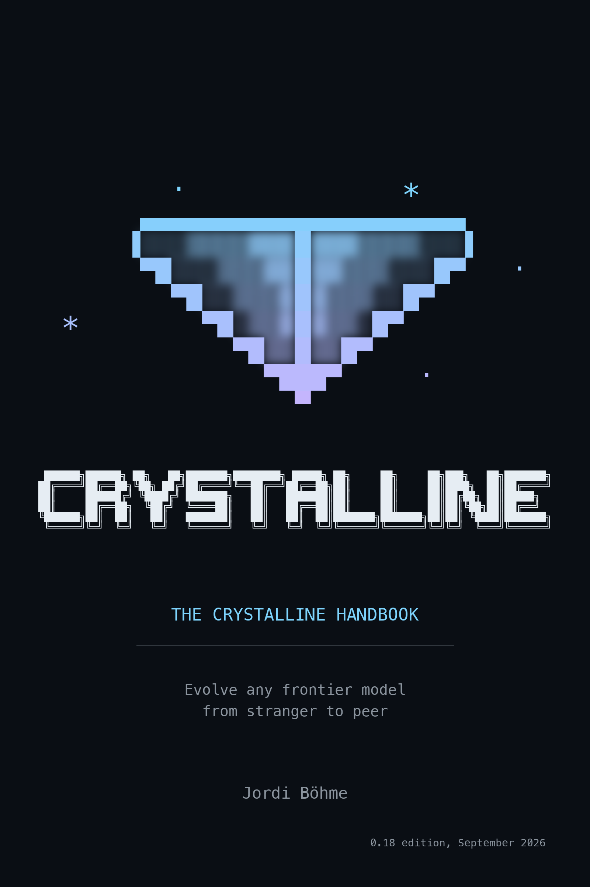

The Crystalline Handbook
Evolve any frontier model from stranger to peer
Preface

A beginning is the time for taking the most delicate care that the balances are correct.
- Frank Herbert, Dune
This is a handbook about onboarding a colleague who happens to be a language model. The colleague is already on your machine, inside whichever harness you use: Claude Code, the Codex CLI, the Copilot CLI, Claude Desktop. It is brilliant and tireless, and at the start of every session it is completely new here. Crystalline is the software that changes the last part. This book is the story of how, and the manual for doing it.
Who this book is for
You run an agent every day, and you have noticed that you explain the same things to it every day. Which service owns the retry queue. Why the payments team never deploys on a Friday. That the thing the wiki calls “the gateway” is the thing the code calls “edge”. You would like to stop. This book shows you how to teach those things once and have them recalled in every session that follows, in files on your own machine.
Or your team is adopting Crystalline together: one shared instance, domains that live in a GitHub repository, knowledge that goes out for review the way code does. Parts III and IV are written at the keyboard for exactly that; the chapters on sharing and access carry the team story.
Or you are the person who onboards agents for other people - platform engineer, enablement lead, the one everybody asks. Every chapter here works as a standalone training module, with a summary at the end you can hand round.
Where this comes from
I started where everyone starts. A CLAUDE.md and a README.md for the agent, the folder the harness keeps for its own notes, markdown files in subfolders of the project, one per topic. All of it works, and for the usual cases it works well. Then I wanted to hand the agent more than one project’s conventions: over a decade of engineering knowledge and experience, sitting in code reviews, slide decks, documentation, tickets and a wiki. I wanted it extracted and taught, so that the agent could act like an engineer with those ten years behind them, one who knows how things are and remembers why: the reasons, the discussions and the decisions behind them. At that size none of those approaches held. Index files pointing at folders bought some time. Then every lookup was a walk down a tree of pointers, and keeping the pointers true had become a job of its own.
The ingest was also a look ahead. A decade of material arriving at once is every problem a knowledge base will ever have, compressed into a few weeks: decisions reversed twice over, the same rule written three ways in three years, a wiki page nobody had believed since 2019, facts that held until a date nobody wrote down. The material had kept moving underneath itself as well. Processes, best practices and coding conventions had changed, and so had the tech stack and the architecture, and each of those had to come through as true for its time rather than as a contradiction. The precogs in Minority Report saw a crime before it was committed. This was that view of a knowledge base, everything it would have to survive, shown before it had grown into any of it. The statuses, the validity windows, the provenance on every engram and the maintenance sweep are all answers to something in that view.
I tried what was already out there. Some of it was good. None of it was built for this: a colleague who is new every session, a body of knowledge that has to be recalled rather than read, and files that stay plain files. At some point the picture of how it should work was simply clear, down to the details, and Crystalline is that picture built. That is also why it has opinions, about domains and manifests and statuses and what an engram is, where a more general tool would have left the choice to you. Chapter 1 walks the same ladder for teams in general, because it turned out I had not been alone on it.
Along the way I have given this material as a workshop more than thirty times, to teams of every size and temperament. The chapters are those sessions. The questions the rooms kept asking are folded back into the text, and the book is what the workshop became once it had been given often enough to know what it was.
How to read it
Parts I and II are an evening’s read. Tea, Earl Grey, hot - or coffee, black, if you side with Janeway. Nothing in them needs a terminal. They are what make the later chapters make sense. Parts III and IV are meant to be read with a keyboard under your hands and an agent running, and they assume you will stop and try things.
Every chapter stands on its own and closes with a summary you could read aloud to a room. If you are training a team, hand out chapters, not the book.
The browser is not the only place to read it. The same text is available to download as a PDF, an EPUB, and a single-file Markdown edition, each rebuilt from the same sources whenever this site is.
Conventions
Three asides recur throughout.
A vignette: a named team, a real situation, two paragraphs. These are the parts to read when you want to know what a feature feels like on a Tuesday.
What the software actually does underneath a behaviour. Skip these on a first read; come back when something surprises you.
The TL;DR. The whole chapter in a few sentences, for the reader who scrolled straight to the end, and for the colleague who swears they read it. Always last, so you always know where to find it.
The screenshots are of Fluid, the web UI, taken on a small demo instance seeded for this book, so the engrams in them are the ones the chapters keep talking about. The diagrams are drawn by hand and kept deliberately plain. Each one has a caption telling you where to look, because a diagram without one is a puzzle.
Anything you can type is in a code block, ready to paste. Conversations with an agent appear as short You: and Agent: transcripts, trimmed of the small talk. Your agent will not say it quite this way, and that is fine; watch what it does, not how it phrases it. And whenever something lands on disk, you get to see the file, because knowing what was written is half of trusting it.
What you need
A machine with an AI harness that speaks the Model Context Protocol. Claude Code, the Codex CLI and the Copilot CLI are wired up with one command each; Claude Desktop installs an extension and never touches a terminal. A terminal helps for the local install and the occasional maintenance command, and semantic search wants the local embedding model fetched once; plain text search works before that.
You do not need a server, an account with anyone or a database. Everything except the shared-instance and team chapters runs on a laptop, and what it produces is a folder of markdown you can open with anything.
The version covered
This handbook describes Crystalline 0.18. The colophon at the front carries this text’s license, the address of the latest release and a QR code that takes you there.